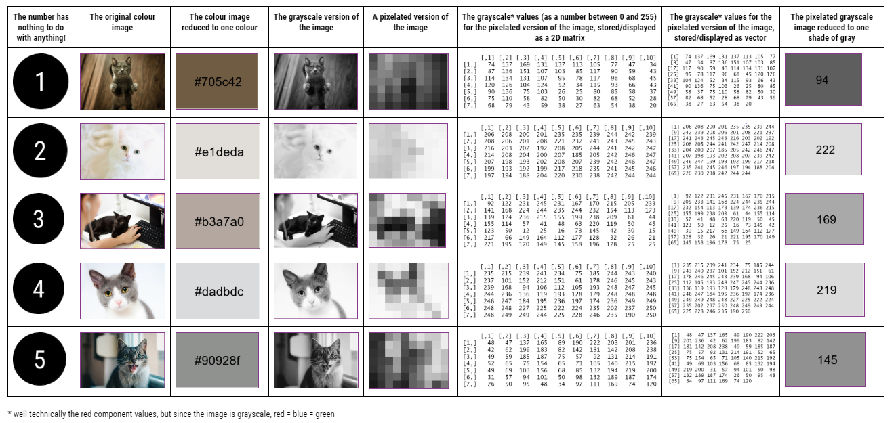
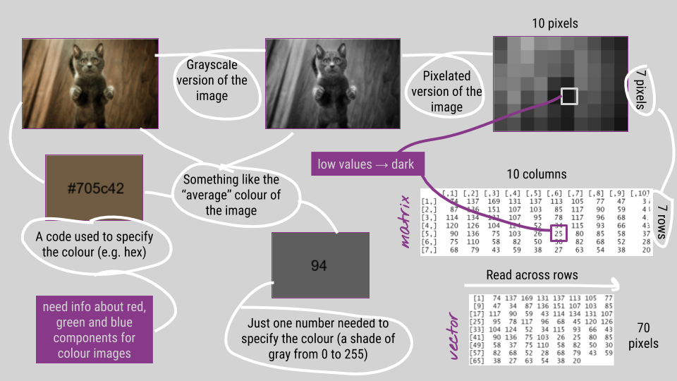
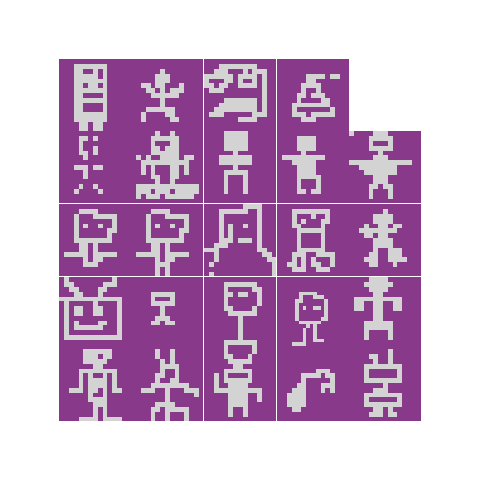
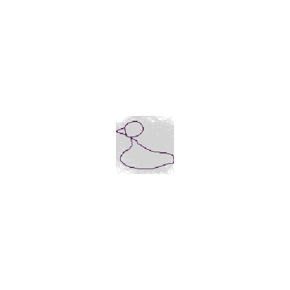

The power of pixels
The power of pixels Workshop notes
This R-Ladies talk/workshop featured some totally non-serious use of R via RStudio to work with images 📷 and answer such questions as “If it (random) walks like a duck 🦆, which side does it quack on?”. I was hoping that participants would have a fun couple of hours learning programming within an awesomely supportive environment. Here are the slides I used for the workshop, with some brief notes about the workshop below.
The first activity I planned for the workshop involved these five cute cats..
… and different representations of data about each of their images.

Workshopees worked together in groups to sort the 40 cards into five groups of eight. Next time, I think I would give each person one card and get them to walk around and find their fellow cats (data)!
The idea was to get people thinking about how image data can be structured before working with image data via R. Below are the kinds of links I hoped people would make:

I used the slides above to talk through some image data know how, and then live coded how to use R and the package magick to create each of the cards used (see code - getting images into R). The plan was that after my demo, people would try out the functions etc. with the five cat images and so “self-mark” their matching attempts but I actually TOTALLY forgot to get people to do this. For the rest of the workshop, we worked through the code examples, with fun extras like drawing our own robots to use as points on plots…

or exploring cluster ducks!….

“Not only do we have left ducks and right ducks, but short ducks and fat ducks” - @annafergussonnz getting a little stats Dr Seuss at @RLadiesAKL #rladies pic.twitter.com/yjTni1TYev
— Liza Bolton 🎃 (@Liza_Bolton) October 18, 2018
Website and workshop materials developed by Anna Fergusson for the R-Ladies Auckland October 2018 Meetup.